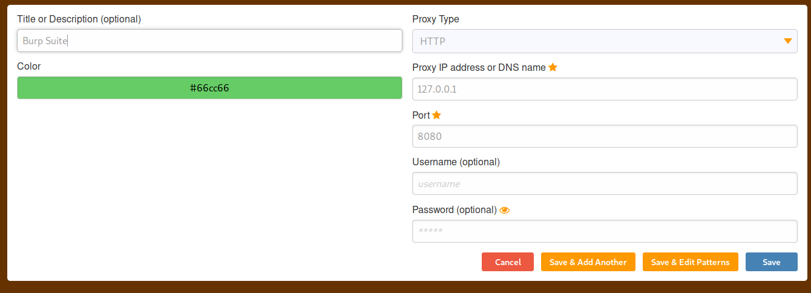

credential stuffing means tring passwords get these from leaks
go to foxy proxy

After setting this can directly on burpsuite
THen turn on burpuite go to proxy tab and reload the page and thus u see it works bette rthan going to preferences and doing it
Then Turn intercept off -go to tesla.com
sign in ke credentials put :

password:test
press intercept is on and then sign in then right click in burpsuite -send to intruder
THere u will see stuff higlighted in green pehle se ppress rhs mai clear 2 or three times then
select test@tes.com and then test and press add :

Insttead of attack type ass sniper(uses only 1 pparmaeter) select pitchfork:
got to payloads:

In payload set 1 ke liye put all usernmaes
payoad set 2 ke liye set all the passwords
and then start attack
see any one of the responses :

This we couldnt sign u in ko add in grep
Close attack go in options:

THus finally aisa milega after starting attack again:

Thus we get an indication directkly due to checkbox
Also see for status codes like 300's for redirects and all
and some different lenght like 4000 or 15000 for here as it might say ki shayad login hua ho.
THis was credential stuffing
Now password Spraying;using known usernames and spraying passwords
Close upar wala
Highligh only test@test.com
and password mai Password123 daala

so agar aise runn kiya hota then it would spray all emails with same password as Password123
U can at times change that Password123
Bt see to it kitne times u can do or else u might lock out na and would get denial of service
So askthe company abt the numer of such logins
Internal isnt that good external protections acha hoga for websites.